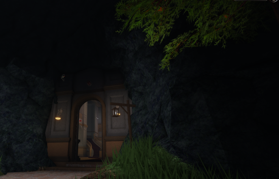
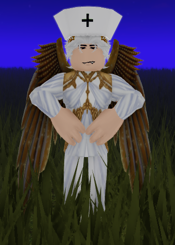

A roblox game with a day and night cycle. During the day, there are nurses that supervise patients within the mental institute – feeding patients breakfast and dinner, and during the day they monitor the activities they set for the day that distract the patients from the horrors that befall them every night.
Nurses give a set of instructions with each activity. Depending on the activity, they will explicitly tell you what to do – explaining minigames, fishing, mining, and even how to sell items. Otherwise, they simply hand out food at picnics or monitor where you clean in the institute, if that's the activity.
When dinner comes around, the nurses watch, making sure you're seated while eating, and follow when they watch patients file in and out from the shower rooms. Finally, at 7'o clock, they lead patients to the dormitries, stationed for an hour until the lights shut off at 8'o clock. They prohibit roaming during the night – as they need their rest as well, and time to plan for the upcoming day – and patients that are found will receive consequences. They plan until day comes at 6 in the morning, and they serve breakfast, explain the activity of the day, and repeat.
There's a specific nurse that's important to this story. A man nurse, named Ashton.

Ashton worked at Equalia falls as a nurse. He was one of the few male nurses around.
One day as he was cleaning, he happened upon a box at the front door. The box that none other Rae and Grey were in – and after glancing around, seeing no other person, he picked up the box carefully to not harm the young.
Upon inspection, he saw that they seemed not quite human – but not pets, either. They had humanoid hands and legs, but the bodies of aquatic beings. He decided since they could breathe air, he’d teach them the rules of the Asylum and be a sort of caretaker for them.
He decided to name them Grey and Rae – matching names for two beings who seemed to have taken a liking to each other in their early days of life. While he worked as a Man Nurse for the asylum, he also kept an eye on the two new companions he had – who followed him around, learning about the new space before them. They had to learn where they were not allowed to enter, and the rules of the place – especially bedtime. They did not understand the curfew for bed time and often tried to have sleepovers in various plants, or hide behind furniture – enjoying spending time with each other, and the sort of hide-and-seek game Ashton engaged in during the night.
Ashton taught Grey and Rae how to read and write, and though they were young, they had taken a liking to certain activities the Asylum participated in. They were fond of Ashton – as he was fond of them.